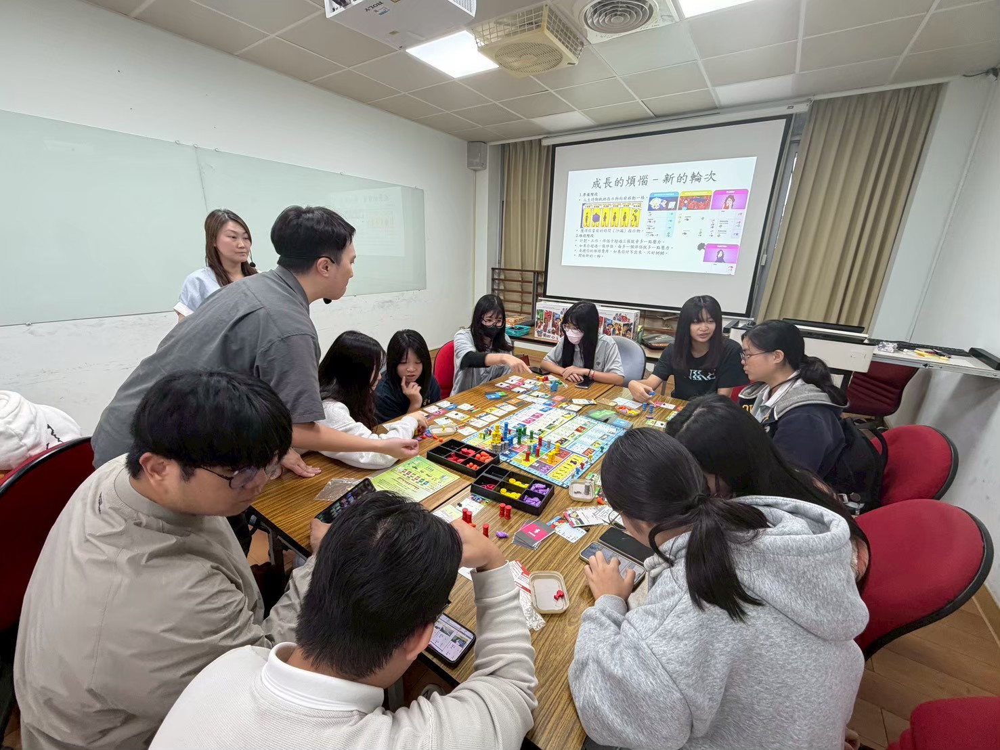

DEPARTMENT OF BUSINESS MANAGEMENT
每周五由經管系學生親自營運。學生輪流擔任經理、採購與行銷角色，實地學習進貨盤點、成本控管、產品定價與門市顧客服務，落實學以致用的創業精神。
結合跨國學習特色，印尼班學生發揮行銷創意與多媒體工具，將傳統印尼美食創新轉化為健康美味蔬食，並透過社群自媒體網路行銷推廣家鄉飲食文化。
走出教室深入花蓮在地社區與經典場域（如將軍府老屋新生意、特色餐廳經營實務），從文化故事提煉品牌價值，探索地方創生的經營商業模式。
本系師生團隊以「生成式 AI 輔助教育訓練試題設計之可行性研究」榮獲管理組佳作，展現結合生成式 AI 技術與人資管理趨勢之創新研究實力。
學生團隊獲選花蓮青年鏈結地方產業專題成果補助計畫，深耕花蓮在地產業，注入青年創意能量，創造經濟與社會雙重價值。
歷年學生代表獲獎無數，包括「全球品牌策劃大賽」全球銀質獎、「地球行動家企劃競賽」特優，以及校園微型創業競賽獲獎與資助。
利用暑期安排學生赴美國加州企業進行海外職場實習，親身體驗跨國企業營運流程，提升英語溝通能力與全球競爭視野。
連結醫療、教育、慈善、人文等慈濟四大志業體及國內優質企業合作，提供四年獎助學金與實習機會，幫助學生於畢業前提早適應職場環境。
由系上專業教師帶隊，實際走訪連鎖餐飲、觀光休閒與電子商務企業，現場解構企業經營特色與商業模式。
課程直接融貫 TBSA 企劃檢定考照內容，輔導學生取得專業企劃認證，建立邏輯架構與企劃書撰寫之即戰力。
配合數位行銷、社群經營與專案管理課程，鼓勵並輔導學生考取多項數位行銷與管理證照，加深求職資本。
鼓勵學生發展跨領域第二專長，輔導考取丙級烘焙食品技術士等多項實用技能考照，打造多元職涯可能性。
畢業專題研究為本系學生的核心成果驗收。學生組團隊將四年所學（行銷、人資、營運、財務與永續）運用於真實議題。歷經創意發想、市場調研、問題分析、跨域整合與溝通表達，並於公開成果發表會上接受專家學者與業界專業評審的回饋建議。

慈濟大學經管系畢業生出路寬廣，活躍於科技新創、知名企業、公益組織與跨國社群。校友在多元領域的優異表現，亦為在校弟妹樹立良好典範：